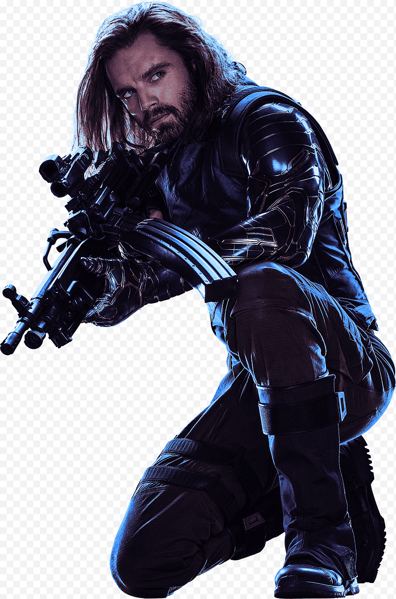

IRON MAN

Iron Man es un superhéroe que aparece en los cómics estadounidenses publicados por Marvel Comics. El personaje fue creado por el escritor y editor Stan Lee en colaboración con el guionista Larry Lieber.Los artistas Don Heck y Jack Kirby fueron los encargados de su diseño.
CAPITAN AMERICA

El Capitán América, cuyo nombre real es Steven "Steve" Grant Rogers, es un superhéroe ficticio que aparece en los cómics estadounidenses publicados por Marvel Comics.
LA VIUDA NEGRA

Una peligrosa conspiración, relacionada con su pasado, persigue a Natasha Romanoff, también conocida como Viuda Negra. La agente tendrá que lidiar con las consecuencias de haber sido espía, así como con las relaciones rotas, para sobrevivir.
BUCKY
James Buchanan "Bucky" Barnes es un superhéroe ficticio que aparece en los cómics estadounidenses publicados por Marvel Comics. Originalmente presentado como un compañero del Capitán América, el personaje fue creado por Joe Simon y Jack Kirby y apareció por primera vez en Captain America Comics # 1.